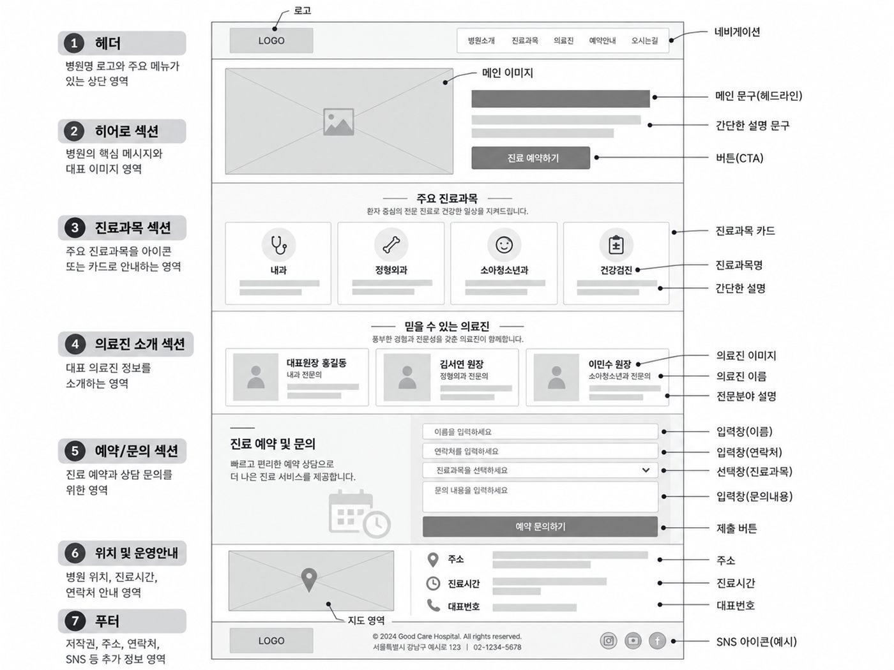
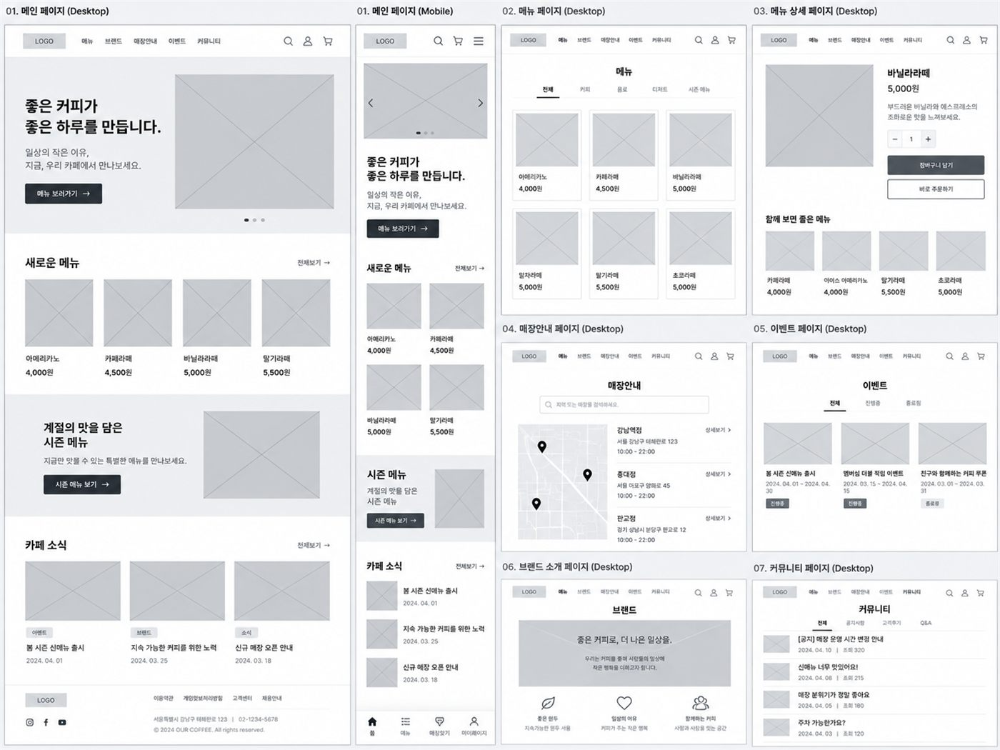

DAY 06바이브코딩 · 개인 프로젝트 기획 · 제작 시작
최종 프로젝트 ① — 기획 · BUILD_SPEC · 제작 시작
오늘부터 각자 다른 개인 프로젝트를 만듭니다. 1교시에는 무엇을 만들지 빠르게 정하고(주제 → 꼭 필요한 기능 → 흐름 → 화면 설계도), 2교시에는 제작 설명서와 CLAUDE.md를 만든 뒤 첫 화면부터 실제로 만들어 AI SPACE에 중간 배포합니다.
1.수업 구성 · 오늘부터 달라지는 점
1교시 기획(AI와 함께 빠르게) + 2교시 제작 설명서 · 기본 구조 · 첫 화면 만들기
무엇을 만들지 정하고 BUILD_SPEC으로 정리한 뒤, 기본 구조와 첫 화면을 만들어 인터넷에 올리기
모두 MELLOW BEAN이라는 같은 프로젝트를 함께 만들었습니다.
각자 다른 프로젝트를 만듭니다. 하지만 기획 → 설명서 → 구조 → 화면 → 기능 → 확인이라는 순서는 모두 같습니다.
최종 프로젝트 3일 일정
기획 · BUILD_SPEC · CLAUDE.md · 기본 구조 · 첫 화면 · 중간 배포
꼭 필요한 기능 완성 · 오류 고치기 · PC · 휴대폰 화면 정리
다듬기 · 최종 점검 · GitHub Pages 공개 · 학원 카페 제출 · 피드백 반영
2.프로젝트 범위 정하기 · STEP 01. 주제 고르기
1교시
실제로 만드는 시간은 이틀 반입니다. 작게 시작해서 완성하는 것이 크게 계획하고 못 끝내는 것보다 훨씬 낫습니다.
회원가입, 장바구니, 결제, 배송 조회, 리뷰, 쿠폰, 관리자 페이지
브랜드 소개, 상품 목록, 문의 작성 → 문의 내용을 Database에 저장
첫 완성본 (MVP)
꼭 필요한 기능만 넣어서 먼저 완성하는 첫 번째 버전입니다. 개발자들은 MVP(최소 기능 제품)라고 부릅니다. 나머지(있으면 좋은 기능)는 완성한 뒤 시간이 남으면 더합니다.
주제 예시 — 골라도 되고 자유롭게 정해도 됩니다
새 프로젝트 폴더와 기획 메모장 만들기
- 1. GitHub에 새 Repository를 만들고 VS Code와 연결하기 (방법은 DAY 02 참고)
- 2. 프로젝트 폴더에
PROJECT_PLAN.md(기획 메모장) 파일을 만들고, 오늘 정하는 내용을 계속 적어 두기 - 3. 고른 주제를 한 줄로 적기 — 예: "동네 필라테스 스튜디오 소개 · 체험 신청 사이트"
3.STEP 02. 비슷한 사이트 조사하기 · 레퍼런스 모으기
레퍼런스 (참고 자료)
내가 만들 사이트와 목적이 비슷한 실제 사이트 중에서 "이런 배치, 이런 느낌으로 만들고 싶다"고 참고하는 자료입니다. 디자이너도 백지에서 시작하지 않습니다.
같은 업종 실제 사이트("동네 카페 홈페이지"로 검색), 디자인 모음 사이트(Pinterest, Behance, GDWEB)
첫 화면에 무엇이 있나, 메뉴바 항목, 구역(Section) 순서, 카드 개수, 행동 버튼 위치
- 1. 프로젝트 폴더에
references폴더 만들기 - 2. 마음에 드는 부분만 3개 정도 캡처하기 — Windows Win + Shift + S (Mac은 Cmd + Shift + 4)
- 3.
ref-01-hero.png처럼 무엇의 캡처인지 알 수 있는 영어 이름으로 저장하기
배치 · 구조 · 분위기는 참고하되, 다른 사이트의 사진 · 로고 · 글은 그대로 가져와 쓰지 않습니다.
4.STEP 03. 프로젝트 방향 · 꼭 필요한 기능 정하기
처음부터 AI에게 "프로젝트 하나 만들어줘"라고 맡기지 않습니다. 방향은 내가 정하고, AI는 검토하고 다듬는 역할입니다. 아래 칸을 직접 채운 뒤 요청하세요.
5.STEP 04. 흐름(User Flow) 정하기 — 사용자는 어떻게 이동할까?
흐름 (사용자 흐름)
사용자가 사이트에 들어와 원하는 일을 끝낼 때까지 어떤 화면을 어떤 순서로 거치는지 화살표로 적은 것입니다. 화살표 사이에 무엇을 눌러서 넘어가는지 적어 두면, 어떤 버튼이 필요한지 바로 알 수 있습니다.
한 페이지짜리 사이트라면 "화면" 대신 한 페이지 안의 구역(Section)으로 적으면 됩니다. 먼저 직접 적어 보고 AI에게 검토받으세요.
6.STEP 05. 화면 설계도(Wireframe) 만들기
화면 설계도 (화면 설계도)
색과 사진으로 꾸미기 전에, 글 · 사진 · 버튼이 화면의 어디에 들어갈지 회색 상자로 그려 정하는 설계도입니다. 집을 지을 때 방과 문의 위치를 먼저 정하고 벽지는 나중에 고르는 것과 같습니다.


크게 보기

크게 보기wireframe.html을 열어 보고 직접 문제 찾기
고칠 곳이 있으면 "[찾은 문제]를 고쳐줘. Section 순서와 번호는 그대로 두고 그 부분만 고쳐줘."처럼 요청합니다. 완벽하지 않아도 됩니다. 만들면서 계속 다듬습니다.
7.UI 용어 한 번에 보기 — 화면 부분의 이름 알기
2교시
"위에 있는 거 조금 작게 해줘"보다 "Header의 높이를 줄여줘"가 훨씬 정확합니다. 화면을 이루는 부분들을 UI(사용자가 보고 누르는 화면 요소)라고 부르고, 이름을 알면 AI에게 정확히 말할 수 있습니다. Header · Section · Card · Footer는 영어 이름 그대로 쓰고, 나머지는 우리말로 말해도 AI가 정확히 알아듣습니다.
| 용어 | 뜻 | 이렇게 말하기 |
|---|---|---|
| Header (헤더) | 페이지 맨 위 영역. 로고 · 메뉴 · 로그인 버튼 | "Header의 높이를 줄여줘" |
| 메뉴바 (Navigation) | 다른 페이지나 Section으로 이동하는 메뉴 | "메뉴바에 '수업 안내'를 추가해줘" |
| 첫 화면 (Hero) | 들어오자마자 크게 보이는 대표 영역 | "첫 화면의 제목을 더 크게 해줘" |
| Section (구역) | 하나의 목적을 가진 영역 (소개, 메뉴, 문의 등) | "About Section을 메뉴 위로 옮겨줘" |
| 행동 버튼 (CTA) | 다음 행동을 이끄는 중요한 버튼 [신청하기] [문의하기] | "행동 버튼을 눈에 띄는 색으로 해줘" |
| Card (카드) | 관련 정보를 하나로 묶은 상자 (상품, 메뉴, 작업물) | "Card 3개의 높이를 똑같이 맞춰줘" |
| 입력창 (Form) | 이름 · 이메일 · 내용을 입력받는 영역 | "신청 입력창에 연락처 칸을 추가해줘" |
| Footer (푸터) | 페이지 맨 아래. 연락처 · 저작권 · SNS | "Footer에 인스타그램 링크를 넣어줘" |
"가운데 네모 3개 사이를 좀 벌려줘."
"수업 Section의 Card 3개 사이 간격을 넓혀줘. Card 크기는 그대로 둬."
오늘의 미션 — 위 용어 중 최소 3개 이상을 실제 프롬프트에 써 보기.
8.STEP 06. BUILD_SPEC · CLAUDE.md 만들기
지금까지 정한 기획을 AI가 매번 참고할 수 있는 두 개의 파일로 정리합니다. DAY 05에서 배운 하네스(작업 환경)를 내 프로젝트에 적용하는 단계입니다.
BUILD_SPEC.md — 무엇을 만들까
제작 설명서. 기능 · Section 구조 · 콘텐츠 · Database 표 · PC/휴대폰 배치를 정리한 문서. "BUILD_SPEC 기준으로 만들어줘"라고 말할 때 쓰입니다.
CLAUDE.md — 어떻게 일할까
작업 규칙. 대화를 시작할 때마다 Claude Code가 자동으로 읽습니다. BUILD_SPEC을 먼저 읽으라는 규칙도 여기에 적어 둡니다.
DAY 05에서 만든 site-check 스킬이 있다면 .claude/skills/site-check 폴더를 이 프로젝트 폴더에도 복사해 두세요. 공개 전 점검에 그대로 씁니다.
핵심 — 설명서(BUILD_SPEC)와 규칙(CLAUDE.md)이 준비된 뒤에 만들기 시작합니다.
9.STEP 07. 작업 나누기 · 기본 구조 만들기
"이 기획서를 보고 웹사이트 전체를 완벽하게 만들어줘."
한 번에 너무 많은 작업 → 원하지 않는 결과 → 어디가 문제인지 찾기 어려움
기본 구조 → Header · 메뉴바 → 첫 화면 → 핵심 콘텐츠 → 나머지 Section → 꼭 필요한 기능 → Database → 휴대폰 화면 → 세부 디자인
결과 확인 — 지금은 디자인이 아니라 필요한 Section이 화면 설계도 순서대로 다 있는지만 봅니다. 기본 반복은 한 단계 요청 → 결과 확인 → 다음 단계입니다.
10.STEP 08. Header · 메뉴바 · 첫 화면 만들기
프로젝트 내용은 이미 BUILD_SPEC에 있으므로 긴 설명을 다시 쓰지 않습니다. 짧게 요청하고 결과를 확인하세요.
11.STEP 09. 핵심 콘텐츠 Section · 실제 콘텐츠 넣기
프로젝트마다 이름은 다릅니다 — 수업 목록, 메뉴, 작업물, 상품, 여행지 등. 공통점은 이 사이트에서 가장 중요한 정보를 보여 주는 영역이라는 것입니다.
실제 사진을 넣을 때는 images 폴더에 파일을 넣고 "images 폴더의 [파일명]을 [Section 이름]에 넣어줘. 사진 비율이 찌그러지지 않게 해줘."라고 요청합니다. DAY 04에서 배운 대로 사진은 웹용으로 줄여서 넣으세요.
시간이 남으면 같은 방식으로 다음 Section을 하나씩 만듭니다 — "BUILD_SPEC에서 아직 만들지 않은 [Section 이름]을 만들어줘. 이미 만든 Section은 변경하지 마."
12.STEP 10. 진행 점검 · AI SPACE에 중간 배포하기
오늘 모든 것을 완성할 필요는 없습니다. 오늘의 목표는 기본 구조 · Header · 첫 화면 · 핵심 콘텐츠 Section 하나까지입니다.
AI SPACE에 중간 배포하기
DAY 05에 연결해 둔 AI SPACE로 오늘 만든 결과를 올려 봅니다. 아직 미완성이어도 괜찮습니다. 인터넷 주소로 보면 내 컴퓨터에서는 몰랐던 문제(깨진 이미지, 휴대폰 화면 넘침)가 보입니다.
AI SPACE MCP 연결이 안 되어 있다면 DAY 05의 STEP 07~09를 먼저 따라 하세요. 배포는 하루 한 번, 수업 끝에만 합니다.
13.자유롭게 고쳐 보기 — 수정 요청 모음
따라 하라고 둔 것이 아닙니다
아래는 "이런 요청도 할 수 있다"는 예시 모음입니다. 순서대로 해 볼 필요도, 그대로 복사할 필요도 없습니다. 내 화면을 보고 고치고 싶은 곳이 생겼을 때, 어떻게 말하면 되는지 떠올리는 용도로 훑어보세요. 대괄호 [ ] 부분은 내 프로젝트에 맞게 바꿔 말하면 됩니다.
고칠 때 지키면 좋은 세 가지
- · "references 폴더의 [ref-01-hero.png]처럼 첫 화면을 큰 사진 위에 제목이 얹힌 배치로 바꿔줘. 사진과 글은 내 것을 그대로 써줘."
- · "[ref-02-menu-cards.png]의 카드 배치(사진 위, 이름·가격 아래)를 참고해서 메뉴 Card를 다시 정리해줘."
- · "[ref-03.png]의 색 분위기를 참고해서 버튼과 제목 색만 바꿔줘. 배치는 그대로 둬."
- · 내 화면을 캡처해서 references 폴더에 넣고 — "[my-issue.png]에서 동그라미 친 부분 간격이 너무 넓어. 그 부분만 좁혀줘."
- · "[Section 이름]의 제목을 조금 더 크고 굵게 해줘."
- · "Section 사이 간격이 너무 좁아. 위아래 여백을 넉넉하게 해줘."
- · "본문 글씨가 작아서 읽기 힘들어. 본문만 한 단계 키워줘."
- · "전체 색을 [따뜻한 베이지·갈색] 계열로 바꿔줘. 배치는 그대로 둬."
- · "강조 색은 한 가지만 쓰고, 나머지는 회색 계열로 차분하게 해줘."
- · "배경과 글자 색의 차이가 작아서 잘 안 보여. 글자를 더 진하게 해줘."
- · "[A] Section을 [B] Section 위로 옮겨줘. 내용은 바꾸지 마."
- · "Card를 한 줄에 4개에서 3개로 바꿔줘."
- · "첫 화면의 글과 사진 위치를 좌우로 바꿔줘."
- · "휴대폰 화면에서 Card가 한 줄에 하나씩 보이게 해줘."
- · "휴대폰에서 메뉴바가 넘쳐. 작은 화면에서는 햄버거 메뉴로 바꿔줘."
- · "휴대폰에서 가로로 화면이 밀리는 곳이 있어. 원인을 찾아서 고쳐줘."
- · "[메뉴 보기] 버튼을 누르면 메뉴 Section으로 부드럽게 내려가게 해줘."
- · "버튼에 마우스를 올리면 색이 살짝 진해지게 해줘."
- · "메뉴바를 스크롤해도 화면 위에 계속 붙어 있게 해줘."
- · "Card 사진들의 크기가 제각각이야. 같은 비율로 잘라서 맞춰줘."
- · "첫 화면 사진 위 글씨가 잘 안 보여. 사진을 살짝 어둡게 덮어줘."
- · "images 폴더의 [파일명]을 [Section 이름]의 대표 사진으로 바꿔줘."
- · "방금 바꾼 것이 마음에 안 들어. 바로 전 상태로 되돌려줘."
- · "방금 수정에서 어떤 파일의 어느 부분을 바꿨는지 쉽게 설명해줘."
- · "고친 뒤로 [버튼이 안 눌려]. 원인을 먼저 찾아서 설명하고, 고치기 전에 나에게 물어봐줘."
14.오늘 작업 저장 · 종료 전 체크리스트
오늘 작업 저장하기 — □ Stage → Commit(메시지 예: "최종 프로젝트 기획 · 기본 구조") → Push까지 했나요? 방법이 기억나지 않으면 DAY 03의 Git 저장 과정을 참고하세요.
□ PROJECT_PLAN.md · wireframe.html
□ BUILD_SPEC.md
□ CLAUDE.md
□ 기본 구조 · Header · 메뉴바
□ 첫 화면
□ 핵심 콘텐츠 Section
□ AI SPACE 중간 배포 주소 메모
□ DAY 07에 먼저 할 일이 BUILD_SPEC에 적혀 있는가?
15.DAY 06 정리 & 다음 수업
다음 수업 예고 — DAY 07
최종 프로젝트 ② — 기능 완성 · 오류 고치기 · 반응형
- • 남은 꼭 필요한 기능과 Database(필요하면 로그인) 완성하기
- • 직접 눌러 보며 확인하기 → 오류 고치기
- • 화면 배치를 말로 정확히 요청하는 법을 배우고 PC · 휴대폰 화면 정리하기
- • AI SPACE에 다시 배포해서 휴대폰으로 확인하기